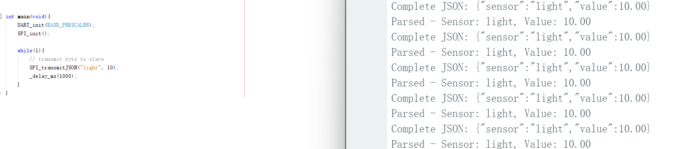

ESE 5190 Final Project - Smart Home
1. Video Presentation
Click the picture to watch the video:

2. Project Summary
This project was an embedded project with IoT inteaction, allowing for both automatic and user's remote control over home appliances.
ATmega328PB XPLAINED MINI board was chosen as the manipulator that driving all acuators to be automatic against their correspodning sensors' readings or remote control demands, while ESP32-FeatherS2 board was selected as the communication relay station for the bidirectional messages transmissions.
- From device to cloud, the sensors's readings and acuators' state are transmitted ATmega328PB XPLAINED MINI to ESP32-FeatherS2 via SPI and then published to cloud with MQTT;
- From cloud to device, the users' remote control demand is transmitted via digital GPIOs and recognized via interrupts(pin change interrupt).

3. Images
system overview
segment circuitry
UI(User Interface)
SR 01 - Sensor testing and calibration:
- Light Sensor (BH1750) with Curtain Motor:
- Communication Protocol:
The BH1750 communicates with the microcontroller using the I2C protocol to transfer lux data.
- Data Transfer and Motor Driver:
Lux data is transfered via I2C, and sent to Atmega328PB which set signals to control the curtain motor.
- Control Logic:
- Low Lux (< 200): Indicates nighttime; the curtain is closed using the motor (
motor_backward).
- Moderate Lux (200–3000): Indicates daytime; the curtain is opened using the motor (
motor_forward).
- Gyroscope Sensor (GY521) with LED and buzzer:
- Communication Protocol:
The GY521 communicates with the microcontroller using the I2C protocol, providing acceleration data across x, y, and z axes.
- Data Transfer and LED Driver:
Acceleration data is processed via I2C, and sent to Atmega328PB which light the LED through GPIO pins and sound a buzzer using PWM GPIO.
- Control Logic:
- Acceleration exceeds 1.50g: An earthquake is detected, and the LED and buzzeralarm is activated. (Simulations use 1.5g to prevent false triggers; theoretical threshold is 1.02g.)
- Smoke Sensor (MQ-9B) with Buzzer Alarm and Fan:
- Communication Protocol:
The MQ-9B outputs an analog signal representing the concentration of smoke or harmful gases, which is read via the ADC on the microcontroller.
- Data Transfer and Actuator Driver:
Sensor data is converted to digital form via the ADC, and control signals are sent to the buzzer and fan via GPIO and motor driver function in Atmega328PB.
- Control Logic:
- Low Smoke (< 50 ppm): Normal air quality; no action is taken.
- High Smoke (> 200 ppm): Hazardous levels; the buzzer emits a continuous alarm, and the fan turns on for ventilation.
- Humidity Sensor(DHT11) with Automatic Windom Motor(SG90):
- Communication Protocol:
The DHT11 uses a simple one-wire protocol to communicate with the microcontroller.
- Data Transfer and Motor Driver:
Humidity data is transferred via the one-wire protocol, and control signals are sent to the SG90 motor through a motor driver funtion.
- Control Logic:
- Low Humidity (< 30%) and Moderate Lux (> 200): Sunny conditions; The window open.(
motor at 0 degrees)
- High Humidity (> 80%): Excessive moisture; The window close. (
motor at 90 degrees).
- PIR Sensor (HC-SR501) with Buzzer and LED:
- Communication Protocol:
The HC-SR501 outputs a digital high/low signal to the microcontroller, indicating motion detection status.
- Data Transfer and Actuator Driver:
Motion detection signals are received via GPIO pins, and the buzzer and LED are controlled through GPIO outputs.
- Control Logic:
- No Motion Detected: Both buzzer and LED remain off.
- Motion Detected: The buzzer emits an alert sound, and the LED flashes to indicate intrusion.
SR 02 - Sensor-based acuator control:
- Temperature & Humidity Sensor + Light Sensor:
Integrated to control the curtain step motor based on environmental conditions.
- Light Sensor:
Used to control the LED stripe for ambient lighting adjustments and auto-curtain.
- Temperature & Humidity Sensor:
Used to control the window NEMA 17 step motor for automated window adjustments.
- Smoke Sensor:
Used to control the KY-012 sounder and fan, providing ventilation and alarms in hazardous conditions.
- Gyroscope:
Used to trigger the KY-012 sounder during seismic events, simulating earthquake alarms.
- Human Sensor(PIR motion sensor):
Used to control the KY-012 sounder for intrusion detection, emitting an audible alarm upon unauthorized motion.
SR 03 - SPI communications between ATmega328PB XPLAINED MINI and ESP32-FeatherS2:
Regarding the bidirectional property of our proposed whole communication scheme, SPI would be a really usefula and effective protocol.
Given this scenario, SPI driver prgramming were accomplished for both ATmega328PB and ESP32-FeatherS2 in bare metal C and Arduino C respectively, where ESP32-FeatherS2 functioned as the "master" and ATmega328PB as the "slave".
Further, unlike CAN communication, whose data frame has intrinsic identifier for checking transmitter, SPI data frame is only contains the data. Howevere, it is of vital significance to efffectively and accurately identify which the incoming SPI data belongs to.
Therefore, we applied the JSON message pack for our SPI message, withe the format "sensor:""downlink/ds/DATASTREAM","value":data, where downlink/ds/DATASTREAM refers to the Virtual Pin each sensor/acuator nested with and data is exactly its reading/state.
- Initial Validation:


However, in our real trials, we trapped in the reverse SPI(from ESP32-FeatherS2 to ATmega328PB), specifically, suffering the buffer congestion at ATmega328PB, since for this MCU, its transmitting and receiving share the same data register, that is we need to stop the on-going trasnmission of ATmega328PB for remote control message.
Even tried everal methods, including before actual data pack, sending a single one byte with value 1/0 to switch the ATmega328PB transmission mode; using an external digital GPIO to notify ATmega328PB if reverse SPI is attempted, but all are not robust, some would achieve one round transmission and then frozen.
Encountering thsi worst scenario, we finial decieded to follow lab4 methdology that seperate the MQTT message publishing and remote control, that is we still using PubSubClient& PubSubClient::setCallback(MQTT_CALLBACK_SIGNATURE) funtion to receive any remote control demands, but using extra digital GPIOs to send back the control demands to achieve robust bidirectional controls over several appliances.
Codes could be seen in the esp32 folder and remote_control folder.
SR 04 - MQTT IoT message publishing and subscribing:
Following the external MQTT library, we published the sensors' readings and acuators' state in the main loop, while receiving remote control in the PubSubClient& PubSubClient::setCallback(MQTT_CALLBACK_SIGNATURE) function.
More specifically, the IoT messaging is uploading extracted sensors' readings and acuators' state from the received SPI message to the Blynk cloud and using Blynk app as the medium to monitor the smart hourse state and deliver remote control demands.
5. HRS Validation
HR 01 - Humidity Sensor (DHT11) with Automated Window Control
- Automated Control:
The system automatically closes or opens the windows using a NEMA 17 step motor when the detected humidity exceeds or falls below a set threshold and rain is detected.
- Remote Control and Monitoring:
Humidity and temperature data are displayed in the Blynk app, allowing users to monitor environmental conditions and remotely control the windows (open/close) via the app.
- Validation:
The system was tested in both high- and low-humidity environments. In a high-humidity setup, the window closed automatically, and in a low-humidity setup, the window opened. For demonstration video, skip to 2:28 in the Fianl Demo Video at top
HR 02 - Light Sensor (BH1750) with Automated Lighting and Curtain Control
- Automated Control:
The system adjusts to changing light conditions. As outdoor light decreases (indicating evening), it gradually turns on LEDs (ws2812) for ambient lighting and closes the curtains using a step motor. Conversely, as outdoor light increases (indicating morning), the curtains automatically open. Curtain motor is connected to a H-bridge to control the close/open of the curtain through Through our curtain-motor driver function.
- Validation
The system was tested under varying light intensities to simulate day and night conditions. Proper functionality of both the LEDs and curtain motors was verified. For demonstrations, refer to the following timestamps in the Fianl Demo Video:
- Auto Ambient Lighting: Skip to 5:58
- Auto Curtain Control: Skip to 6:54
HR 03 - Motion Sensor (PIR HC-SR501) with Intrusion Detection
- Automated Control:
When unauthorized motion is detected near the entrance, the system automatically activates a buzzer and LED alarm to notify of potential intrusion.
- Validation
The system was tested by simulating motion near the sensor. Both the buzzer and LED alarm were confirmed to activate as expected. The test setup and results were recorded in video format. Refer to the demonstration video at timestamp 4:52 for details.
HRS04 - Fresh Air System with Smoke Sensor (MQ-9B) and Smoke Detection and Alarm
- Automated Control:
When smoke levels exceed a safe threshold, the system automatically activates a 5V exhaust fan to ventilate the area and triggers a smoke alarm using a buzzer for immediate notification.
- Validation
The system was tested under simulated smoke conditions. Both the fan activation and buzzer alarm were verified to function correctly. For a demonstration, refer to the Final Demo Video at the top, timestamp 3:41.
HR 05 - Gyroscope/Vibration Sensor (GY521) with Earthquake Detection
- Automated Control:
When seismic activity, such as an earthquake, is detected, the system automatically triggers an earthquake alarm, activating both a buzzer and an LED to alert users.
- Validation:
The system was tested by simulating vibration conditions to mimic seismic activity. The buzzer and LED alarm were confirmed to activate correctly. For a demonstration, refer to the video at timestamp 5:32.
HR 06 - Remotely Controlled Door with SG90 Motor
- Validation:
The door can be open/closed via phone remotely. For a demonstration, refer to the video at timestamp 6:33.
HR 07 - Remote IoT Control and Monitor: Blynk Integration
- Description:
Except the auto-controlling, sensor data and motor/actuator states are transmitted to the ESP32 and published to the Blynk cloud, enabling remote monitoring and control via a smartphone app.
- Validation:
Controlled motors and actuators through the app and confirmed synchronization with the physical system. The control process and state monitoring UI skip to 1:14 and 6:31
Performance Metrics and Shortcomings
Performance Metrics:
- Power Efficiency:
The system operates within a power budget of 12V DC, supporting all sensors and actuators without significant voltage drops.
- Component Responsiveness:
Motors (e.g., NEMA 17, SG90) responded promptly to control signals, with activation times under 300ms.
- Sensor Integration:
All sensors exhibited stable performance under various environmental conditions.
Shortcomings:
- Smoke Sensor:
Reduced sensitivity was observed when operating under extreme temperatures, necessitating recalibration to maintain accuracy.
- Scalability Limitation:
The defect in our SPI scheme might constrain the system's scalability for larger deployments. If more sensors and acuators needed, might require wireless module to reduce the receiving buffer load.
Conclusion
This project was a significant learning experience in IoT system design, integrating hardware and software to create an intelligent, automated home. Key features include environmental monitoring (humidity, light, smoke, motion, and seismic activity), automated control of windows, curtains, and ventilation, intrusion detection, and seamless IoT-based remote control via the Blynk app. Communication between the ATmega328PB and ESP32 ensures real-time data synchronization, providing a responsive, user-friendly, and efficient smart home solution. This IoT-based smart home system capable of automating multiple home appliances and transmitting real-time data to a smartphone app for bidirectional control which integrates a variety of sensors, motors, and communication protocols, enabling responsive and customizable functionality. The core control logic was programmed into an ATmega328PB Xplained Board, which communicates with an ESP32 microcontroller via SPI, and data is further transmitted to the Blynk cloud through MQTT.
Lessons Learned
Through this project, we realized the importance of thorough testing to ensure sensor reliability under diverse conditions, which is vital for accurate system performance. We also learned to anticipate communication delays in IoT systems and the necessity of designing for fault tolerance to enhance system robustness. The integration process, involving numerous components, consumed significant time and effort, during which we encountered many challenging and hard-to-understand bugs and incompatibilities. These experiences deepened our understanding of embedded systems and equipped us to handle similar issues more effectively in the future.
Future Improvements
To enhance scalability and flexibility, transitioning to wireless communication protocols like Wi-Fi or Zigbee would be beneficial. Incorporating machine learning algorithms could optimize device control by predicting user preferences, while adding energy-saving mechanisms such as solar-powered components would improve sustainability. Given the complexity of this smart home system, using a more powerful board or planning for multiple boards from the start would ensure better performance. In such cases, robust remote communication between boards should be prioritized.